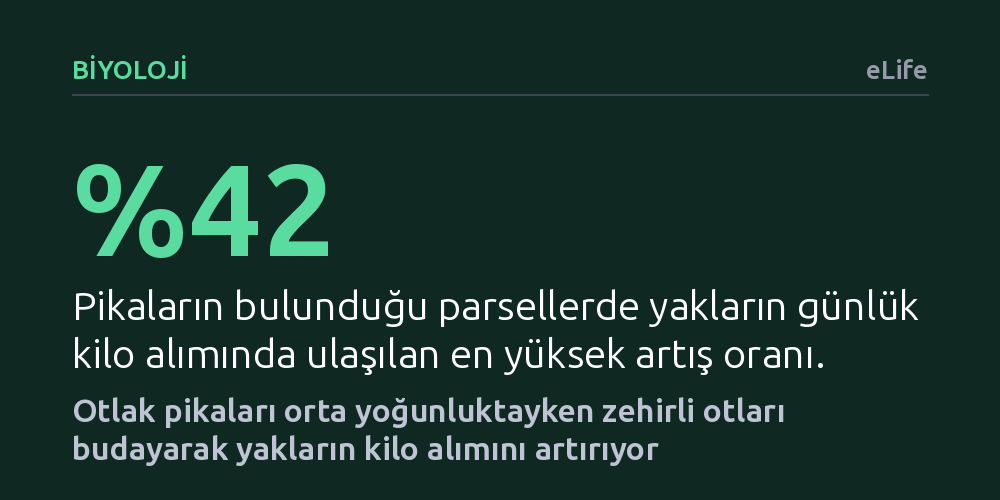

BIYOLOJI · eLife · 2026-09-09
Araştırmacılar, otlak pikalarının yaylalar için birer zararlı mı yoksa yararlı ekosistem mühendisi mi olduğunu kontrollü saha deneyleriyle inceledi. Pikaların orta yoğunlukta bulunmasının zehirli otları budayarak yakların günlük kilo artışını yüzde 42'ye kadar yükselttiği belirlendi.
Zararlı sayılarak zehirlenen küçük memelilerin orta yoğunlukta korunduğunda hayvancılık verimini artırdığını göstererek doğa koruma ile mera hayvancılığının birbirini dışlamadığını kanıtlıyor.

Çinghay-Tibet Platosu, yaklaşık 14 milyon evcil yak ile dünyanın en geniş yayla hayvancılığı sistemlerinden birine ev sahipliği yapıyor. Bu zorlu ve yüksek coğrafyada yakların otlaklarını paylaşan bir diğer yaygın canlı ise tavşangiller ailesinden küçük bir memeli olan otlak pikası. Yıllardır yayla çobanları ve mera yöneticileri, pikaları büyükbaş hayvanların otuna ortak olan, toprağı delik deşik ederek erozyona yol açan birer tarım zararlısı olarak değerlendirdi. Bu yaygın görüş nedeniyle bölgede pikaları tamamen ortadan kaldırmayı hedefleyen geniş çaplı zehirleme ve ilaçlama seferberlikleri düzenlendi.
Buna karşılık ekologlar, pikaların yırtıcı kuşlar ve tilkiler için temel bir besin kaynağı olduğunu, toprağı kazarak su tutma kapasitesini artırdıklarını ve ekosistemin kilit taşı türlerinden biri olduklarını savundu. Ancak bu iki zıt görüş bugüne kadar doğrudan sahada test edilmemişti. Özellikle aşırı otlatma baskısı altındaki bozkırlarda yaklar için zehirli olan Stellera chamaejasme adlı yabani otun hızla yayılması, ekolojik dengeyi daha da karmaşık hale getirdi. Pikaların bu zehirli otları yememelerine rağmen sürekli dipten budamaları, araştırmacıları şu temel soruya yöneltti: Acaba pikalar sanıldığı gibi yakların rakibi değil de yaylaları zehirli otlardan temizleyen gizli birer yardımcı olabilir mi?
Araştırma ekibi, pikalar ile yaklar arasındaki karmaşık etkileşimi aydınlatmak amacıyla Çinghay-Tibet Platosu'nda yaklaşık 3.200 metre yükseklikte kapsamlı bir saha araştırması başlattı. İlk olarak hayvanların diyetleri mercek altına alındı. Dışkı ve otlama analizleri, pikalar ile yakların besin tercihlerinin büyük ölçüde ayrıştığını doğruladı: Yaklar doğrudan buğdaygilleri tüketirken, pikalar zehirli Stellera bitkilerini yemeden sadece kesiyor ve diğer geniş yapraklı otlarla besleniyordu.
Ardından hipotezi doğrudan sınamak için 150x150 metre ebatlarında çitle çevrilmiş deney parselleri oluşturuldu. Bu parsellerin bir kısmında pikalar doğal popülasyonlarında bırakıldı; diğer kısmında ise yürütülen mücadeleyle tünel sayısı yüzde 90 azaltılarak pikalar alandan uzaklaştırıldı. Araştırmacılar bir yaz mevsimi boyunca her iki grupta bitki örtüsünün bileşimini, yemlerin ham protein ve lif değerlerini, yakların adım başına ısırma sayılarını ve hayvanların günlük ağırlık değişimlerini hassas ölçümlerle takip etti.
Deney sonuçları, pikaların varlığının yakların gelişimini doğrudan desteklediğini açıkça gösterdi. Pikaların uzaklaştırıldığı alanlarda zehirli Stellera bitkisinin yayılımı iki katına çıktı. Boylanan zehirli otlar, yakların asıl gıdası olan besleyici buğdaygillerin üzerini kapatarak onların güneş ışığına ve toprak besinine erişimini kısıtladı. Bunun neticesinde kaliteli otların bolluğu yarı yarıya geriledi ve meradaki yemin ham protein oranı yüzde 14 oranında azaldı.
Zehirli otların çoğalması yakların beslenme davranışını da olumsuz etkiledi. Otların arasına karışan zararlı bitkiler yaklar için engel oluşturduğu için hayvanların otlama verimliliği yüzde 30 ila 40 oranında düştü. Tüm bu zincirleme ekolojik süreçlerin sonucunda, pikaların bulunmadığı alanlarda otlayan yakların günlük kilo alımı, pikalarla bir arada otlayanlara kıyasla yüzde 42'ye varan oranda azaldı.
Araştırmanın ortaya koyduğu en kritik ayrıntı ise pika yoğunluğu ile yak gelişimi arasındaki kubbe biçimli ilişki oldu. Pikaların sağladığı bu dolaylı beslenme faydası hektar başına yaklaşık 200 yuva yoğunluğunda zirveye ulaştı. Ancak pika yuvası sayısı hektar başına 400'ü aştığında pikaların yakların besinine de ortak olmaya başladığı ve faydanın yerini gıda rekabetine bıraktığı görüldü.
Bu çalışma, ekoloji biliminde uzun süredir tartışılan doğrusal olmayan etkileşim teorisine sahada güçlü bir kanıt sundu. Küçük otçul memeliler, düşük ve orta nüfus yoğunluklarında bitki örtüsünü düzenleyerek büyükbaş hayvanların gelişimini kolaylaştırabiliyor; ancak nüfusları aşırı arttığında rakip konumuna geçiyor. Bu bulgu, yaylalarda pikaları tamamen ortadan kaldırmayı amaçlayan toptan zehirleme uygulamalarının meraları zehirli otların istilasına açık hale getirerek hayvancılığa istemeden zarar verdiğini gösteriyor.
Araştırmacılar, mera yönetiminde pikaları kökten kurutmak yerine yuva yoğunluğunu 400 yuva/hektar eşiğinin altında tutacak dengeli bir koruma-kontrol stratejisini öneriyor. Pika sayısı bu eşiğin altında kaldığı sürece ilaçlama yapılmaması, hem bölgenin biyolojik çeşitliliğini koruyor hem de yakların daha hızlı kilo almasını sağlayarak çobanların gelirini artırıyor. Böylece doğa koruma ile hayvansal üretimin birbirine feda edilmesi gereken iki zıt kutup olmadığı somut bir ekolojik mekanizmayla kanıtlanmış oluyor.